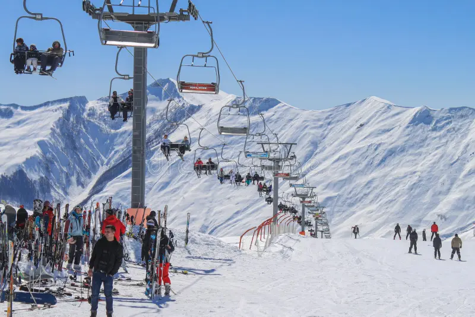
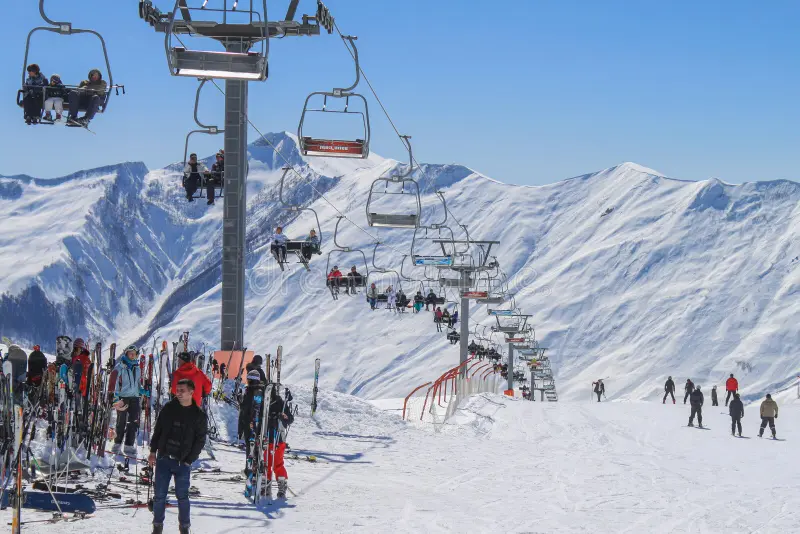

.png)

 English
English
 ქართული
ქართული
 Chinese
Chinese


 


Тур по Грузии на 5 ночей и 6 дней
 - 5 ночей 6 дней
- 5 ночей 6 дней
 - Тбилиси, Мцхета, Гори, Казбеги, Гудаури и регион Кахети
- Тбилиси, Мцхета, Гори, Казбеги, Гудаури и регион Кахети
День 1 – Тбилиси


День 2 – Мцхета и Гори
День 3 – Гудаури и Казбеги
День 4 – Полный тур по Тбилиси
День 5 – Бодбе и Сигнахи
День 6 – Отъезд из Тбилиси
Цены, включенные услуги и важные заметки
Цены
4* отель
5*отель
- Седан - 970$
- Минивен - 630$
- Спринтер - 678$
- Автобус - 642$
Услуги
- Проживание в отеле
- Завтрак
- Туры на частном транспорте
- Гид, говорящий на китайском языке
- Трансфер аэропорт–отель–аэропорт
- Входные билеты во все достопримечательности согласно маршруту
- Встреча в отеле перед началом тура
- Возврат в отель после завершения тура
- Плата за вход в соответствии с вашим маршрутом
- Страхование путешествия
- Бутылка воды
Примечания
- Турпакет включает 2 трансфера из/в аэропорт. Если количество трансферов превышает 2, будет взиматься дополнительная плата.
- Мы несём ответственность за туристов только после пересечения ими границы Грузии.
- Для бронирования тура клиенты должны отправить копии билетов и паспортов на нашу электронную почту и внести предоплату в размере не более 30% от общей стоимости.
- Стоимость пакета не включает ранний заезд или поздний выезд.
- Банковские и переводные комиссии не включены в стоимость.
- Компания не несёт ответственности за форс-мажорные обстоятельства, вызванные экстремальными погодными условиями (например, сильный снег).
!!! Если будет дополнительный запрос на обеды и ужины, за каждое питание взимается дополнительная плата в размере 25$